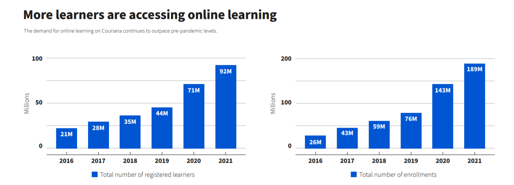

O-Learning
Online learning involves courses offered by primary institutions that are 100% virtual. Online learning, or virtual classes offered over the internet, is contrasted with traditional courses taken in a brick-and-mortar school building. It is a development in distance education that expanded in the 1990s with the spread of the commercial Internet and the World Wide Web. The learner experience is typically asynchronous but may also incorporate synchronous elements. The vast majority of institutions utilize a learning management system for the administration of online courses. As theories of distance education evolve, digital technologies to support learning and pedagogy continue to transform as well.

History of online learning in higher education in the United States
The first correspondence courses began in the 1800s using parcel post to reach students who couldn't be on a university campus.[1] By the early 1900s, communication technologies improved and distance education took to the radio waves. In 1919 professors at the University of Wisconsin began an amateur radio station, becoming the first licensed radio station dedicated to educational broadcasting.[1] Soon after, access to higher education was again expanded through the invention of the television; giving birth to what was known as the telecourse. The University of Iowa began to experiment with television for educational purposes in the 1930s. It was not until the 1950s, when the FCC began to reserve television frequencies for educational purposes, that telecourses caught the attention of the public. The value of television for education was furthered by the establishment of the Corporation for Public Broadcasting (CPB) in 1967. The CPB mission was "to encourage the growth and development of public radio and television broadcasting, including the use of such media for instructional, educational, and cultural purposes"
Online learning emerged in 1982 when the Western Behavioral Sciences Institute in La Jolla, California opened its School of Management and Strategic Studies. The School employed computer conferencing to deliver a distance education program to business executives.[2] Starting in 1985, Connected Education offered the first totally online master's degree in media studies, through The New School in New York City, also via computer conferencing.[3][4][5] Several years later, in 1989, the University of Phoenix began offering education programs through the internet. In 1993 with the debut of the first Internet web browser, created by the University of Illinois, online learning began to flourish.[6] In 1998, more online programs were founded: New York University Online, Western Governor's University, the California Virtual University[6] and Trident University International.[7][8]
The Educational Technology Leadership Program, through the Graduate School of Education and Human Development at The George Washington University, offered a Master's degree beginning in 1992. The program, developed by Dr. William Lynch, originally delivered course content in association with Jones Intercable's Mind Extension University (ME/U). Classes were broadcast via satellite late at night, and student communicated through a Bulletin Board system. Their first cohort graduated in May, 1994. By early 1996, Bill Robie transitioned the ETL Program to the Internet where the graduate degree program was offered completely online. He assembled a set of web-based tools and HTML pages that allowed asynchronous communication among students and faculty, the delivery of lectures, drop boxes for assignments, and other features that have since become the core toolkit for course management systems.[9][10]
In 2000 only 8% of students were enrolled in an online course, but by 2008 enrollment had increased to 20%.[11] The expansion of online education has not slowed either; by the fall of 2013 nearly 30% of all postsecondary students were enrolled in some kind of distance education course.[12] Although the data on online course and program completion are complex,[13] researchers have noted high rates of attrition (ranging from 20%-50%) among students enrolled in online courses compared to those who take traditional face-to-face courses.
In 2020, the global coronavirus pandemic prompted many universities to hastily transition to online learning in lieu of holding classes in person.[15][16][17][18] With the change to remote education being for many institutions rather abrupt, universities developed a wide range of different standards for online provision. Many adopted some form of microlearning for video content.

Online operators (methods of delivery)
Given the improvements in delivery methods, online learning environments provide a greater degree of flexibility than traditional classroom settings.[20][21] Online platforms can also offer more diverse representations of student populations as learners prepare for working in the twenty-first century.[22] The diversity comes from interacting with students outside of one's geographical location, possibly offering a variety of perspectives on course content.[22] Courses offered completely online are primarily delivered in an asynchronous learning or synchronous learning format.
Asynchronous learning environments are described as online spaces where work is supported through the use of digital platforms in such a way that participants are not required to be online at the same time.[23][24] Threaded discussions, e-mail, and telephone calls are options of asynchronous delivery.[25] This gives meaning to the anytime-anywhere appeal of online learning.[26] A benefit of asynchronous learning is the learner having more time to generate content-related responses to the instructor and peer postings; they have time to find facts to back their written statements.[23] The additional time provides an opportunity to increase the learner's ability to process information.[23] The spelling and grammar within postings of an asynchronous environment are like that found in formal academic writing.[27] On the other hand, one of the main limitations of this delivery method is the greater potential for a learner to feel removed from the learning environment. Asynchronous learning is viewed as less social in nature and can cause the learner to feel isolated.[23] Providing the student a feeling of belonging to the university or institution will assist with feelings of isolation; this can be done through ensuring links to university support systems and the library are accessible and operable.
Along these lines and applying the two dimensions of "time distance" and "number of participants", German marketing professor Andreas Kaplan has proposed a classification scheme that places online distance courses into four distinct groups:[28]
MOOCs (massive open online courses): unlimited in the number of participants, enabling them to learn asynchronously at their own pace.
SMOCs (synchronous massive online courses): unlimited in the number of participants, in which students participate synchronously and in real-time.
SPOCs (small private online courses) number of students is limited, learning takes place in an asynchronous manner.
SSOCs (synchronous small online courses) number of students is limited, require participants to follow the lessons in real time.